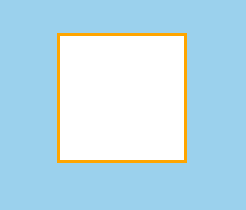
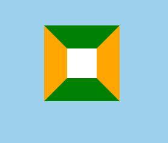
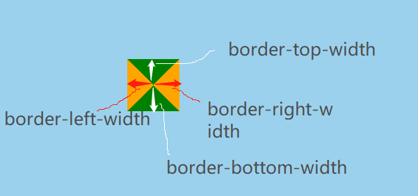
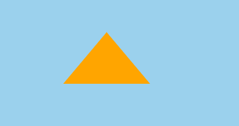
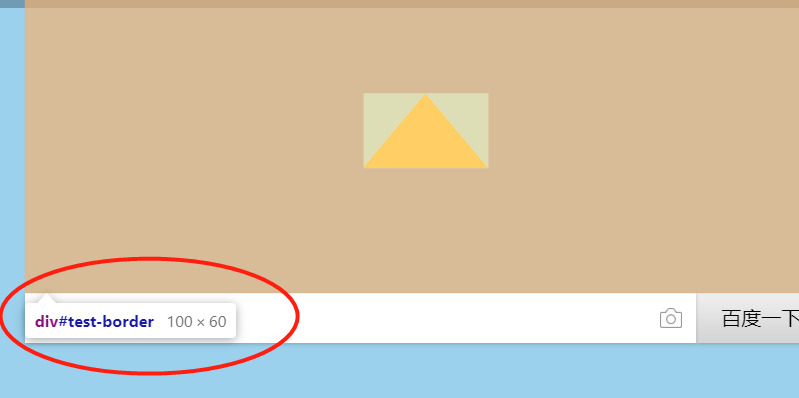

用CSS的border可以画出高质量的三角形。
我们一般会这么使用border:
#test-border {
width: 100px;
height: 100px;
margin: 100px auto;
background: #fff;
border: 2px solid orange;
}
得到的效果如下：

因为我们一般设的border-width都很小，导致很多童鞋以为border是四个矩形，然而其实并不是，我们把content的宽度变小，border-width增大，并涂上不同的颜色,更改代码如下：
#test-border {
width: 40px;
height: 40px;
margin: 100px auto;
background: #fff;
border: 30px solid;
border-color: green orange;
}
效果如下：

那么把width和height设为0，就可以得到四个三角形：

注意，这里的border-width指的是外边界到中心点的垂直距离！即如上图所示。
border-width设置值方式如下：
1，设一个值：为四个方向；
2，设两个值：上下--左右；
3，设三个值：上--左右--下；
4，设四个值：上--右--下--左。
比如现在我们需要一个底边长100px，高60px的正摆放三角形，根据以上知识，可推算如下：
1, 正向三角形：顶部的border-width为0， 顶部和左右的颜色都为transparent；
2，底边长100px = 左右的border-width各为50px；
3，高60px = border-bottom的width为60px;
故改写代码如下：
#test-border {
width: 0;
height: 0;
margin: 100px auto;
border-width: 0 50px 60px;
border-color: transparent transparent orange;
border-style: solid;
}
结果如下：

